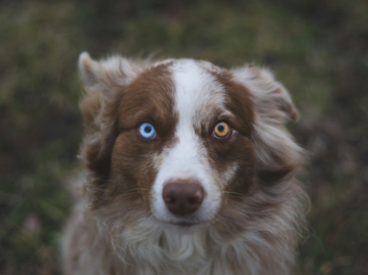
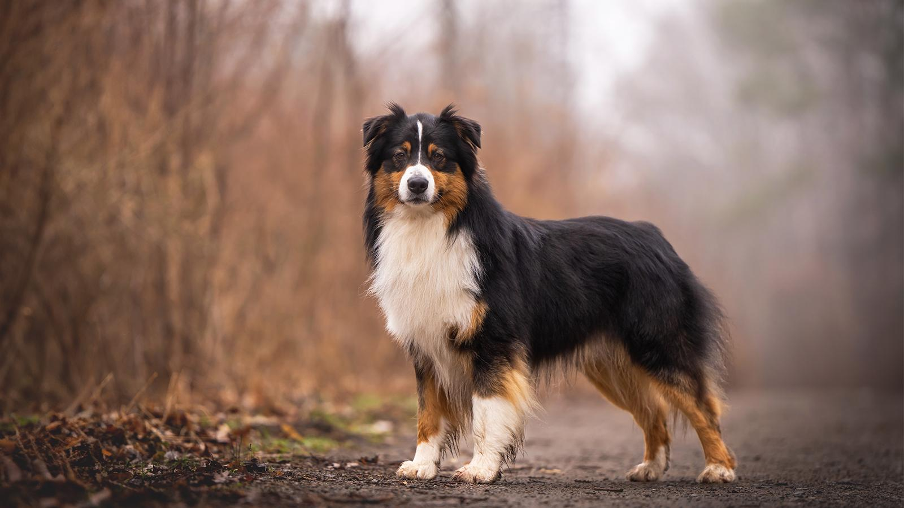
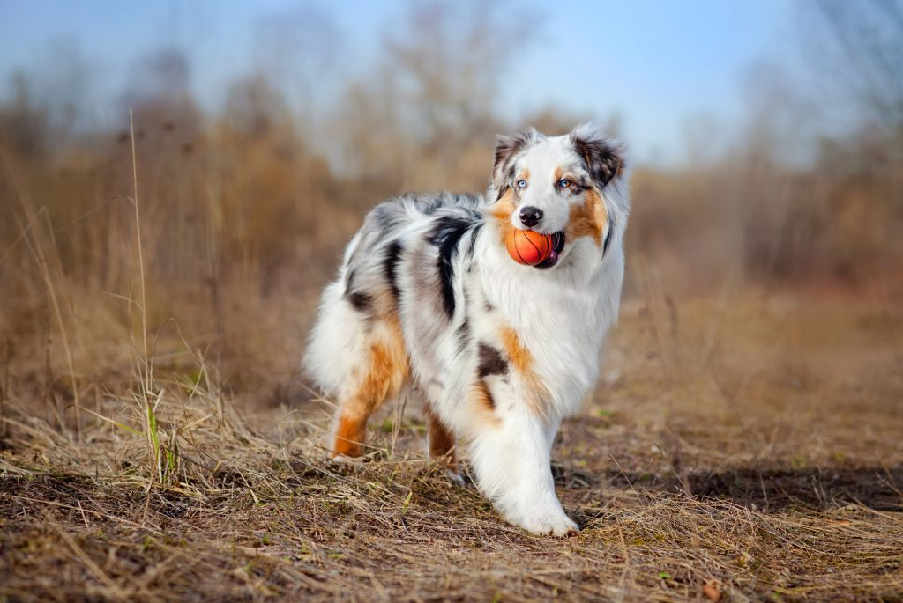

Ahoj tady můžeš najít různé druhy psů, jak vypadají a co je třeba naučit.
Australský ovčák
Vzhled: Středně velký pes s dlouhou srstí, často s barevnými skvrnami někdy i mívají odlišné barvi očí.
Co naučit: Základní poslušnost,překul se a takové další. pejsek si to oblíbí a má zábavu na víc,socializace s lidmi a jinými zvířaty.




ňěmecký špic trpasličí
Vzhled: Malý, kompaktní pes s huňatou srstí a špičatýma ušimama lidé ho často nazívají kulička.
Co naučit: Základní poslušnost, socializace s lidmi a jinými zvířaty.